Risch 微分方程
Risch 微分方程
在考虑超越指数函数积分时我们遇到了形如的微分方程(6)，其中数（基域）为已知函数，为未知函数。这是一个Risch微分方程的求解问题。一般地，设 ，Risch微分方程问题就是要判断
在
，Risch微分方程问题就是要判断
在 中是否有解，如果有解则构造出解。此问题是最简单的一类微分方程，同时对于符号积分的求解过程也是本质上重要的。
中是否有解，如果有解则构造出解。此问题是最简单的一类微分方程，同时对于符号积分的求解过程也是本质上重要的。
有理函数域
首先我们假定最简单的有理函数域情形，即设、 或。记表示有理函数
或。记表示有理函数 的既约分母，对于任意为不可约多项式且，我们希望求出
的既约分母，对于任意为不可约多项式且，我们希望求出 的次数。设，，。可令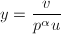，其中，则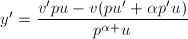，由可知。故方程(1)中三项，，
的次数。设，，。可令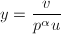，其中，则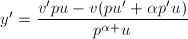，由可知。故方程(1)中三项，， 的分母中的次数分别为，，。比较两端分母中的次数，分为三种情形：
的分母中的次数分别为，，。比较两端分母中的次数，分为三种情形：
- 1$" class="latex-inline" style="vertical-align: -4px" width="39" height="16">时，必有；
- 时，必有；
- 时，
- 若左端求和后无约分，则；
- 若左端求和后有约分。由可找到
 ，
， ，使得，从而满足，。同理可设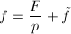满足，
，使得，从而满足，。同理可设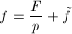满足， 。从而由于有约分，左端求和分母为的项必定消去，可知而不可约,，故，可得又由可知必有，即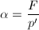。
。从而由于有约分，左端求和分母为的项必定消去，可知而不可约,，故，可得又由可知必有，即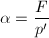。
由此得到了未知函数分母中的次数 的上界，使我们便于使用待定系数法。
的上界，使我们便于使用待定系数法。
仔细验证可以发现，只有在论证时用到了为不可约多项式，其他地方均可以将条件减弱为为无平方因子的多项式。因此可以首先用的无平方因子分解代替完全分解。需要处理的是对幂次的无平方因子，求出的不可约因子，使得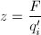为整数。与Rothstein-Trager方法类似得论证可以得到1\Leftrightarrow \res_x(F-zp',p)=0.$$" class="latex-display" width="580" height="19">从而我们只需求结式关于 的整数根即可。我们得到了如下计算的一个倍数的方法。
的整数根即可。我们得到了如下计算的一个倍数的方法。
 无平方因子。
无平方因子。 。
。在得到的一个倍数之后，只要确定分母次数的一个上界，即可使用待定系数法求出的分母来了。设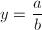，我们希望求出记。带入方程(1)并两端乘以最小公分母可以得到形如的等式，其中为多项式，记，，，则，， 的次数分别为，
的次数分别为， ，。比较等式两端的次数，分为三种情形：
，。比较等式两端的次数，分为三种情形：
- 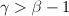\beta-1$" class="latex-inline" style="vertical-align: -4px" width="69" height="16">时，必有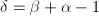；
- 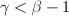时，必有；
- 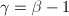时，
- 若左端求和后最高项未被消去，则；
- 若左端求和后最高项被消去。设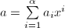，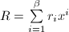，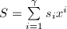，则有，从而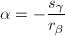。
由此我们得到了分母次数的一个上界。
有了引理2，接下来便可以对的分母进行待定系数法求解了，最终可得到方程(1)在、或的解。
一般情形
上面我们讨论了为最简单的有理函数域的情形。对于一般情形，Bronstein[3]证明了如下定理。
 的任意有限次代数扩张中初等积分和Risch方程问题也都可解。
的任意有限次代数扩张中初等积分和Risch方程问题也都可解。
由于Risch[2], Rothstein[4], Davenport[5]解决了超越初等扩张的积分问题和Risch方程问题，Trager[6]，Davenport[7]解决了代数扩张的积分问题和Risch方程问题。从而根据定理1，便可以从理论上得到所有初等函数的初等积分和Risch方程问题的解决方案了。
一阶线性微分方程
求积分实际上就是最简单的一阶方程，不过可以看到解决此问题的难度已经相当大了。Risch微分方程是最简单的一类一阶微分方程（线性方程），当然我们求的仅仅是中的解，而非上的初等函数解。我们知道一阶线性方程(1)有通解表达式但这并没有解决一般问题，因为为了算出表达式中的指数积分，我们还得回到解Risch方程问题上。
不过以下的定理[1]使我们能够避免循环论证而得到上可能的初等函数解。
- 若在
 上代数，则由Liouville定理，必为
上代数，则由Liouville定理，必为 上对数函数的和，从而必也在上代数。
上对数函数的和，从而必也在上代数。 - 若在上超越，由于在上初等，自然在上初等，故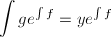也在上初等。记为上的超越指数函数，由分解引理可知，其中（注意指数函数求导后次数不变），从而有解。若，则有，否则中必有上的对数函数。可设，其中，而由方程(1)可得可知必有，也有。
这就完成了证明。 □
因此求一阶线性方程可以通过求中的解，或是上的代数函数积分来完成。
微分Galois理论
接下来要讨论的自然是一般高阶线性方程如何求解的问题。对一般的高阶线性方程可化为线性方程组矩阵形式 其中
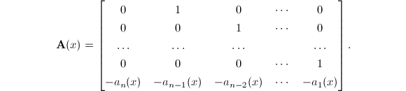
其中
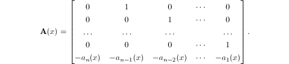
设对应的齐次方程的基本解矩阵为，则非齐次线性方程的通解为[8]因此我们可以首先考虑齐次方程的求解。
在求解多项式方程的过程中诞生了伟大的Galios理论，解线性微分方程也有一个对应物——微分Galois理论。在这里我们做一个简要介绍，这些理论也是Kovacic著名的二阶线性方程求解算法的基础（尽管最终的算法可以完全摆脱微分Galois理论的语言）。首先引入几个重要的概念[9]。
 ，满足。
，满足。
 其中
其中 为
为 上的矩阵，于是
上的矩阵，于是下面的将微分Galois群与代数群建立联系的基本结果是本质上重要的。
定理的证明需要较多的准备，因此我们在这里只给出几个例子。
 ，且由知即有
可知
，且由知即有
可知 为非零常数，而
为非零常数，而
 可知。又，可知，
可知。又，可知，
Lie-Kolchin定理
我们可以考虑比初等函数更广的一类函数，应用起来也更加方便。
为一个微分代数，为的微分扩张，满足。称为在上的Liouville生成元，若满足以下条件之一
- 在上是代数的，即有
![$f(x)\in K[x]$](latex/latex2png-DifferentialEquation_40994369_-5.gif) 使得；
使得； - 在上是原函数，即有；
- 在上是原函数的指数，即有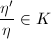。
称为上的一个Liouville函数域，若 ，为上的Liouville生成元。上的任一个Liouville函数域中的元素称为上的Liouville函数。
，为上的Liouville生成元。上的任一个Liouville函数域中的元素称为上的Liouville函数。
线性微分方程的优美理论将引导我们，把方程Liouville解与一般线性群的代数子群联系到一起。下面理论上重要的Lie-Kolchin定理给出了线性微分方程的解是Liouville解的充要条件。
因此为了研究线性微分方程的Liouville解，我们可以转向代数子群的研究。比如说对于二阶线性方程，我们便需要对特殊线性群的代数子群有所了解。
二阶线性微分方程
考虑二次齐次线性方程其中，通过标准的变换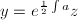（中的积分总可以求出），可化为缺项形式因此我们下面可以只考虑形如
其中的二阶线性方程。在这样的特殊形式下我们知道，若是一个Liouville解的话，那么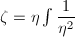是与线性无关的另一个解[8]，从而方程所有的解都是上的Liouville解。
正如上面所说的，特殊线性群的代数子群对于我们很重要，事实上有下面的定理(见[10])。
对应于代数子群的四个类型，如下定理就不令人意外了。
- 有一个解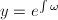为Liouville解，其中；
- 有一个解为Liouville解，其中
 为上的二次代数元，且第一类情形不成立；
为上的二次代数元，且第一类情形不成立； - 所有解在上是代数的，为Liouville解，且前两类情形不成立；
- 无Liouville解。
- 可假设是上三角的，由，，可知，令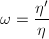，即得。
- 可假设为
 的子群，则有或者于是总有，。由定理3可知必有。设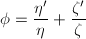，则
的子群，则有或者于是总有，。由定理3可知必有。设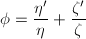，则 且由可计算得
设为方程的一个解，对方程两端求导可得从而可假定（这是第一类情形），于是有令即为原方程的解，且为上的二次代数元。
且由可计算得
设为方程的一个解，对方程两端求导可得从而可假定（这是第一类情形），于是有令即为原方程的解，且为上的二次代数元。 - 只须证扩张次数有限即可。由于为有限群，可设。取
 中的
中的 个元素，令
则必存在使得线性无关，在上线性相关。设，则，而由于在任一个作用下仍为的一个排列，故由
个元素，令
则必存在使得线性无关，在上线性相关。设，则，而由于在任一个作用下仍为的一个排列，故由 的构造知道，由定理3知，从而任个中的元素在上线性相关，自然是有限的。
的构造知道，由定理3知，从而任个中的元素在上线性相关，自然是有限的。 - 由于对二阶线性方程来说，如果有一个Liouville解的话，那么所有解都是Liouville的。由Lie-Kolchin定理4可知在这种情况下是可解的。但
 对应的是不可解的。这个矛盾便证明了方程无Liouville解。
对应的是不可解的。这个矛盾便证明了方程无Liouville解。
证毕。 □
在知道了Liouville解的形式之后，对Liouville解的存在性的判定便有了一些依据。下面的必要条件主要是通过对解的奇点分析得到的。我们知道，设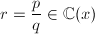，其中，为互素的多项式，则 的极点即为的零点，且在极点处的阶数等于作为零点的重数。在处阶数定义为。这实际上是更一般的离散赋值的特殊情形。
的极点即为的零点，且在极点处的阶数等于作为零点的重数。在处阶数定义为。这实际上是更一般的离散赋值的特殊情形。
在这样的定义下，在处的极点阶数实际上等于。
- 的所有极点阶数为偶数或1，在处的阶数为偶数或大于2；
- 至少有一个极点的阶数为2或大于2的奇数；
- 在极点处的阶数小于等于2，在处的阶数大于等于2。可设部分分式分解则，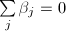。令有。
- 不妨设0为极点，考虑和在0处的Laurent展式（其它点处类似考虑）
由可得从而
 。故当时，必有，，知。所以极点阶数为偶数或者1。再考虑作为处的Laurent展式(4)，则有。故当时，必有
。故当时，必有，，知。所以极点阶数为偶数或者1。再考虑作为处的Laurent展式(4)，则有。故当时，必有 ，m-1$" class="latex-inline" style="vertical-align: -1px" width="87" height="12">，知。所以处的阶数为偶数或大于2。
，m-1$" class="latex-inline" style="vertical-align: -1px" width="87" height="12">，知。所以处的阶数为偶数或大于2。 - 由但（否则为第一类情形），不失一般性，可设其中
 为奇数。则由式(3)及展式(4)可得而为奇数，，可知或。所以至少有一个极点阶数为2或为大于2的奇数。
为奇数。则由式(3)及展式(4)可得而为奇数，，可知或。所以至少有一个极点阶数为2或为大于2的奇数。 - 不妨设0为一个极点（其它极点类似考虑），由于解为上的代数函数，可设在0处的Puiseux展式其中，由及展式(4)可得可知，即在极点处的阶数小于等于2。并且若则有
 ，可知。于是可设其中。再考虑处的Laurent展式（为了不混淆，我们将的系数换一个记号）同样可得可知，，即有在处的阶数大于等于2。由
，可知。于是可设其中。再考虑处的Laurent展式（为了不混淆，我们将的系数换一个记号）同样可得可知，，即有在处的阶数大于等于2。由
 可知，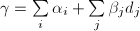。再由知。
可知，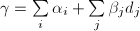。再由知。
证毕。 □
下面我们来说明如何通过类似的奇点分析具体构造出所需要的Liouville解。首先设满足第一类必要条件，即的所有极点阶数为偶数或1，在处的阶数为偶数或大于2。
设解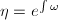，。则在 处的部分分式项可写为不妨仅考虑0处，简记，则在0处的Laurent展式可写为其中为
处的部分分式项可写为不妨仅考虑0处，简记，则在0处的Laurent展式可写为其中为 的非负幂次项级数。以下分几种情况讨论。
的非负幂次项级数。以下分几种情况讨论。
() 设0处极点阶数为1，，由得到可知，。从而有可知，而0是极点，故只能有。从而在0处的部分分式为。为了统一起见，记。
() 设0处极点阶数为2，，同样的推理可以得到，，从而在0处的部分分式为，其中。
() 设0处极点阶数为，可设由可得。设在0处的部分分式为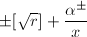，经过计算可得，其中为中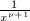的系数。
() 设0非极点，与(c1)同样的推理可得，或。在0处的部分分式是0或者。
综合以上四种情况得到其中表示的极点集合，，记号可取
或。因此下面的任务就是确定 ，和
，和 了，为此我们还需考虑在处Laurent展式
了，为此我们还需考虑在处Laurent展式
() 设处阶数为大于2，代入可得，或。
() 设处阶数为2，，同样的可得，，。
() 设处阶数为，表示在处展式的多项式部分。类似()可得，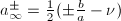，其中为中的系数。
综合以上三条可得到再比较两边展式的的系数可得 最后还需要确定，设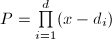，则可写为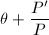，代入得到用待定系数法求出多项式
最后还需要确定，设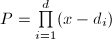，则可写为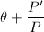，代入得到用待定系数法求出多项式 即可。得解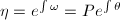。
即可。得解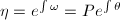。
以上对构造第一类解的讨论，我们可以稍作一些总结。为了求解，首先通过奇点分析得到 （即每个奇点贡献的总和），再通过待定系数法求解关于多项式的一个微分方程，最后根据和计算。在构造另外两类解时过程也大抵如此，只不过奇点分析更复杂一些，关于的微分方程次数会较高，而通过和计算的过程也更复杂，需要解一个代数方程。我们不再一一详述，具体可参见[10]，不过为了完整起见，这里给出Saunder[11]对Kovacic算法的一个简化版本，不仅利于实现，也避免了具体求出所有奇点。
（即每个奇点贡献的总和），再通过待定系数法求解关于多项式的一个微分方程，最后根据和计算。在构造另外两类解时过程也大抵如此，只不过奇点分析更复杂一些，关于的微分方程次数会较高，而通过和计算的过程也更复杂，需要解一个代数方程。我们不再一一详述，具体可参见[10]，不过为了完整起见，这里给出Saunder[11]对Kovacic算法的一个简化版本，不仅利于实现，也避免了具体求出所有奇点。
- 预处理与必要条件检测。
- 设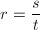为既约分式，作无平方分解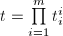。
- 构造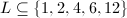为在上代数次数可能的取值。
- 若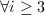为奇数有，且大于2或为偶数，则；
- 若，或为奇数有，则；
- 若且，则。
- 构造和的组成部分。
- 构造固定部分
- 构造2阶极点对应项。设的根为，设为中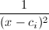的系数，令

- 构造大于等于3阶极点对应项。当时求得的根为。设在处的阶数为，设，
 为中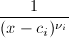的系数，
为中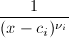的系数， 为
为![$r-[\sqrt{r}]_{c_i}^2$](latex/latex2png-DifferentialEquation_36128449_-6.gif) 中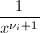的系数。令
中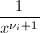的系数。令 - 构造处阶数为2的对应项。若
 ，令为中的系数，令
，令为中的系数，令 - 构造处阶数小于2的对应项。若，设，
 为中
为中 的系数，为中的系数，令
的系数，为中的系数，令
- 构造和。
- 取，若
 则，否则。
则，否则。 - 其中任取，令。构造
- 若，则令进行第四步的求解，否则换一组不同的
 。若已尝试所有则换一个不同的，若已尝试所有的
。若已尝试所有则换一个不同的，若已尝试所有的 ，则算法终止。
，则算法终止。
- 取，若
- 求解。记。
- 若，求解次首一多项式，使输出解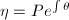。
- 若
 ，求解次首一多项式，使令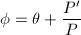，求解方程输出解。
，求解次首一多项式，使令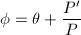，求解方程输出解。 - 若，求解次首一多项式，使
其中
 ，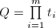。求解方程输出解。
，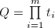。求解方程输出解。
- 若
高阶线性微分方程的多项式解和有理解
Kovacic算法成功地解决了二阶线性方程的Liouville解，我们看到了微分Galois理论的巨大威力。尽管更加困难，使用微分Galois理论也可以的确用来求解高阶线性微分方程。例如早在1981年Singer[12]就在理论上提出了一个确定性的过程来求出所有的Liouville解，在此基础上还有许多发展，但复杂度仍太高以至于无法实际应用。因此需要考虑更快速、便于实现的方法。这里我们简要地介绍Abramov，Kvansenko[13]，Bronstein[14]提出的高阶线性方程多项式解、有理解、原函数指数解的方法。
多项式解
在本节中设为一个数域，我们上考虑阶线性方程
其中系数，我们第一步的目标是求出方程(5)在中的多项式解。设为一个多项式解，代入方程(5)得到
记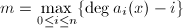，设在处取到。记其中表示的首项系数。则 ，可知当时，式(6)中左端最高次项为
，可知当时，式(6)中左端最高次项为 比较式(6)两段最高项可知或者，或者。从而我们得到了次数的上界其中表示的最大正整数根。
比较式(6)两段最高项可知或者，或者。从而我们得到了次数的上界其中表示的最大正整数根。
如同我们经常做的，在得到次数上界之后便可用待定系数法求解了，最终的未定系数便为解表达式中的任意常数。但由于无法精确求出，只能采取近似的估计，而估计的往往会很大，计算复杂度就较高。可以考虑如下的递推方法来求解关于待定系数的线性方程组更有效。
对“截断”的线性方程（），同样定义如上的和，记为和（从而，）。假设我们搜索次数不超过 的多项式解，同样比较首项系数可得
的多项式解，同样比较首项系数可得
 从而求出，再作变量替换，得到新的关于的方程再继续求解此方程不超过次的多项式解，如此续行即可。
从而求出，再作变量替换，得到新的关于的方程再继续求解此方程不超过次的多项式解，如此续行即可。
当然在通过(7)计算的过程中要考虑的情形，若此时等式右端为零，则判定此方程无多项式解；若等式右端为零，则可视为一个未定参数，代入变换后的新方程进行计算。接下来当比较系数时，若等式左端为零，而右端含未定参数时，便可消去右端的某个参数。到求得之后，最终可以得到一个其系数中含若干个参数的多项式，将所有系数联立为零，可确定参数的值或者最终出现在解中的可变常数。这最后一个问题的规模是的[13]，复杂度比非递推的待定系数法要小很多。
有理解
设为有理函数解，则从方程(5)可知的每一个极点都是 的零点，从而的每个不可约因子都是的因子。为了确定，只需确定的各个不可约因子在中出现的次数即可。
的零点，从而的每个不可约因子都是的因子。为了确定，只需确定的各个不可约因子在中出现的次数即可。
设 为的一个极点，。设在处的阶数为
为的一个极点，。设在处的阶数为 ，即，。则有代入方程(5)得到
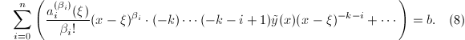
和多项式解情形类似的，我们定义，并设在处取到。记则当时，式(8)左端项的系数为，而
，即，。则有代入方程(5)得到
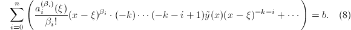
和多项式解情形类似的，我们定义，并设在处取到。记则当时，式(8)左端项的系数为，而![$b\in K[x]$](latex/latex2png-DifferentialEquation_220235369_-5.gif) ，可知必有。于是得到即为在中的次数上界，其中表示的最小负整数根。
，可知必有。于是得到即为在中的次数上界，其中表示的最小负整数根。
因此本质上和多项式解情形一样（对的分析变为了对的分析），我们从理论上得到了一个求有理函数的方法（求得分母，待定分子系数）。但在上分解系数总是不很方便的。为了合并的乘积，从而将所有运算都限制在系数域中，我们引入如下平衡分解的概念(见[15])就显得很自然了。
 关于
关于 是平衡的，若，或者对于
是平衡的，若，或者对于 的任意不可约因子，都有。称为关于
的任意不可约因子，都有。称为关于 的平衡分解，若，
的平衡分解，若， 无平方因子，两两互素，且关于是平衡的。
无平方因子，两两互素，且关于是平衡的。
再设，称关于是平衡的，若对于每个都是平衡的。称为关于的平衡分解，若此分解对于每个都是平衡分解。
的无平方分解总是关于的平衡分解，选取不同的，可以得到不同于的无平方分解的平衡分解。不严格地说，平衡分解要比无平方分解来得“细”，但比完全分解来得“粗”。我们可以只动用上的GCD运算，构造出关于的平衡分解，为了不偏离主题太远，算法将在稍后给出。
设 为关于的平衡分解。考虑（
为关于的平衡分解。考虑（ ），设为在上的完全分解。由于关于平衡，故对于每个，在因子处的阶数都是相等的，公共的阶数可记为。同样定义，并设在处取到。令为了得到中的次数上界，可对与施行Euclid算法，求出为使的最小负整数值，则不难知道中的次数有上界
），设为在上的完全分解。由于关于平衡，故对于每个，在因子处的阶数都是相等的，公共的阶数可记为。同样定义，并设在处取到。令为了得到中的次数上界，可对与施行Euclid算法，求出为使的最小负整数值，则不难知道中的次数有上界
这样我们避开了上的分解而求出了的分母。可设，（为次数上界）。代入原方程(5)整理可得
其中接下来的问题就是求新方程(9)的多项式解，而这是我们已经解决了的。
 ，，令（可证），则方程
，，令（可证），则方程
平衡分解
我们在求高阶线性方程的有理解过程中引入了平衡分解的概念，其实也不难构造计算平衡分解的算法。我们将分几步走，每步的正确性都是不难验证的。
关于的平衡分解。
- 若为常数，则输出，算法终止。
- 若不为常数，计算最大公因子，
- 若，则输出，算法终止；
- 若1$" class="latex-inline" style="vertical-align: -1px" width="43" height="13">，设，
 （），递归调用并输出，算法终止。
（），递归调用并输出，算法终止。
关于的平衡分解。
- 若，设，输出，算法终止。
- 若1$" class="latex-inline" style="vertical-align: -5px" width="49" height="18">，任取，递归调用计算出，输出，算法终止。
上面的两个算法都假定了无平方因子，因此平衡分解中因子的次数都是1。下面明显的定理给出一个最终版的平衡分解算法。
高阶线性微分方程的指数解
高阶Liouville解的求解要比二阶困难得多。1992年，Bronstein[14]提出了求解所有指数解（严格来说是原函数的指数解，即解满足，为一个数域）的一组基的方法，并且此方法也已在Axiom系统上实现。此算法在[16]的基础上作了一些改进，甚至不需要在上分解，因此也可作为高阶线性微分方程的Singer一般算法[12]一个高效的子算法实现。
在本节中仅考虑高阶阶齐次方程的情形，即
Riccati指数与Riccati界
设为方程(10)的一个指数解。在的情形，对方程我们知道 满足这被称为原方程关联的Riccati方程。对一般的方程(10)，不难求出对应的关联Riccati方程为
其中因此求指数解的问题就相当于求解非线性的关联Riccati方程在中的解。
满足这被称为原方程关联的Riccati方程。对一般的方程(10)，不难求出对应的关联Riccati方程为
其中因此求指数解的问题就相当于求解非线性的关联Riccati方程在中的解。
在这些精巧的定义下，Bronstein证明了以下关于解结构的定理[15]。
我们这里只能暂时省略论证的过程，来看看有了定理9之后能做些什么。首先，我们可以通过计算平衡分解计算得到。接下来可以通过试探依次求出中求和的每一项组成部分。例如我们试探为求和中的一项，令，，则由及（为微分算子）可得
且计算可得可得为新的关于的阶线性方程，如此续行直到求出解或者全部试探完毕。
多项式部分
首先我们考虑求出多项式部分。记，利用 中的最高次项为，记且在处取到等号，设比较方程(11)两边的最高项可知。从[16]命题2.3的证明可以知道，可知的取值只有有限多种，而的根只有有限多个，从而的取值至多只有有限多种可能，依次试探并作变量替换，如此续行，直到求出所有可能的多项式解的集合。
中的最高次项为，记且在处取到等号，设比较方程(11)两边的最高项可知。从[16]命题2.3的证明可以知道，可知的取值只有有限多种，而的根只有有限多个，从而的取值至多只有有限多种可能，依次试探并作变量替换，如此续行，直到求出所有可能的多项式解的集合。
有理部分
考虑 对应项。简记，，，作部分分式分解记且处取到等号。令其中
则比较方程(11)分母中的的最高次项可知。由可得到一个关于
对应项。简记，，，作部分分式分解记且处取到等号。令其中
则比较方程(11)分母中的的最高次项可知。由可得到一个关于 系数的代数方程组，得到的至多有有限种可能。接下来依次求并试探所有的对应的项，直到求出所有可能的。
系数的代数方程组，得到的至多有有限种可能。接下来依次求并试探所有的对应的项，直到求出所有可能的。
最后求解对数导数了，而这相当于对变换后的阶线性方程(12)求多项式解 ，是我们已经解决的问题。
，是我们已经解决的问题。
二阶微分方程的特殊函数解
许多特殊函数往往来源于某一类微分方程的解（二阶的尤为常见）。当一个方程没有Liouville解时，我们期望能够用特殊函数来表示方程的解，便于进一步的研究。精确地说，希望找到形如的解，其中为 上的Liouville函数，
上的Liouville函数， 为有理函数，则为某一个标准方程的解（例如Bessel方程）。
为有理函数，则为某一个标准方程的解（例如Bessel方程）。
变量替换
下面我们考虑二阶方程，的特殊函数解。设给出特殊函数的标准方程为作变量替换，记，，，，，，利用，，可得
消去， 可得
可得
 若满足待求解方程，则有
及可解得
代入式(13)可得
若满足待求解方程，则有
及可解得
代入式(13)可得
有理函数 的求解
的求解
首先注意到，由式(14)可得 为Liouville函数。因此要求得符合标准方程的解，关键问题如何找出合适的有理函数。寻找的主要方法还是分析函数的奇异性，首先求出的分母，再找到其分子次数的上界，最后通过求解代数方程求出分子的各系数。
为Liouville函数。因此要求得符合标准方程的解，关键问题如何找出合适的有理函数。寻找的主要方法还是分析函数的奇异性，首先求出的分母，再找到其分子次数的上界，最后通过求解代数方程求出分子的各系数。
 。记，。若，则
。记，。若，则 ，其中
，其中
![\begin{equation*}
Q=\prod\limits_iQ_{(2-\delta)i+2}^i\in K[x],\tag{16}
\end{equation*}](latex/latex2png-DifferentialEquation_172468399_.gif) ，满足（当时不等号严格）或者。
为不可约多项式，使得，则有，，。从而由及式(15)可知
，满足（当时不等号严格）或者。
为不可约多项式，使得，则有，，。从而由及式(15)可知 即注意到，为分别为，中的重数，可知式(16)成立。
即注意到，为分别为，中的重数，可知式(16)成立。
设\deg Q+1$" class="latex-inline" style="vertical-align: -4px" width="131" height="16">，下证必有。由于，可得，（当）或（当时），，，同样由及式(15)可得即再注意到可得所要证的。
最后注意当时有，从而，故不等号成立与后一种情形是重合的，这就完成了证明。 □
由此我们得到了想要的的表达式和次数的上界，将的系数待定代入(15)可以得到一个代数方程组，最后解此方程组即可。另外，为保证得到的不是常数（注意常数总是解），我们可以添加额外的一些限制方程。设，，，，加入方程，其中为新的待定元。可以看出，解新的方程组可以保证至少有一个使得，从而非常数。
函数，也允许带上参数（例如Bessel方程中的参数），将它们也视作方程组中的未定元，求解代数方程组时可以将参数确定下来。
经典特殊函数
在本节的最后我们给出定理10在一些经典特殊函数的情形，便于实际应用。
- Airy函数，由方程给出。，，可知，或，。
- Bessel函数，由方程给出，其中。，
 ，可知，
，可知， 或，。
或，。 - Kummer函数，由方程给出。，，可知，或，
 。
。 - Whittaker函数，由方程给出，，，可知，或，。
参考文献
[1]Computer algebra: systems and algorithms for algebraic computation, Academic Press, London, UK, 1988.
[2]The Problem of Integration in Finite Terms, Transactions of the American Mathematical Society 139 (1969), 167-189.
[3]Integration of elementary functions, Journal of Symbolic Computation 9 (1990), no.2, 117 - 173.
[4]A new algorithm for the integration of Exponential and Logarithmic Functions, Proceedings of the 1977 MACSYMA Users Conference (1977), 263-274.
[5]The Risch differential equation problem, SIAM Journal on Computing 15 (1986), no.4, 903 - 918.
[6]Integration of Algebraic Functions, Ph.D thesis, Dpt. of EECS, Massachusetts Institute of Technology (1984).
[7]Intégration algorithmique des fonctions élémentairement transcendantes sur une courbe algébrique, Annales de l'institut Fourier 34 (1984), no.2, 271-276.
[8]常微分方程教程, 高等教育出版社, 北京, 2004.
[9]Galois theory of linear differential equations, 科学出版社, 北京, 2007.
[10]An algorithm for solving second order linear homogeneous differential equations, Journal of Symbolic Computation 2 (1986), no.1, 3 - 43.
[11]An implementation of Kovacic's algorithm for solving second order linear homogeneous differential equations, Proceedings of the fourth ACM symposium on Symbolic and algebraic computation (1981), 105-108.
[12]Liouvillian Solutions of n-th Order Homogeneous Linear Differential Equations, American Journal of Mathematics 103 (1981), no.4, 661-682.
[13]Fast algorithms to search for the rational solutions of linear differential equations with polynomial coefficients, Proceedings of the 1991 international symposium on Symbolic and algebraic computation (1991), 267 - 270.
[14]Linear ordinary differential equations: breaking through the order 2 barrier, Papers from the international symposium on Symbolic and algebraic computation (1992), 42 - 48.
[15]On solutions of linear ordinary differential equations in their coefficient field, Journal of Symbolic Computation 13 (1992), no.4, 413 - 439.
[16]Liouvillian solutions of linear differential equations with Liouvillian coefficients, Journal of Symbolic Computation 11 (1991), no.3, 251 - 273.
[17]Solutions of linear ordinary differential equations in terms of special functions, Proceedings of the 2002 international symposium on Symbolic and algebraic computation (2002), 23-28.